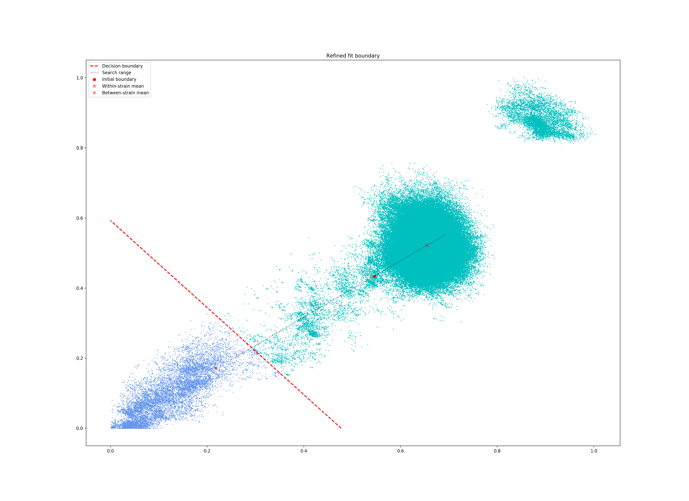

Fitting new models (--fit-model)#
If you cannot find an existing model for your species in the list you will want to fit your own. This process is flexible, and there are five different models you can use depending on the population structure of your dataset.
Note
After fitting a model to a new species we would like to share it on our website, so others can use it for assigning queries. If you are open to this, please read Distributing PopPUNK models after this page.
Overview#
First, use poppunk --create-db to sketch your input data and calculate distances
between all samples. This is detailed in Sketching (--create-db).
Then, use poppunk --fit-model <model_name> with one of the following model names:
bgmm– Bayesian Gaussian Mixture Model. Best for small sample collections with strain-structure. Works best when distance distribution components are clearly separated.dbscan– HDBSCAN. A good general method for larger sample collections with strain-structure. Some points will always be designated as noise, so a subsequent run of model refinement may help improve the fit.refine– Model refinement. Requires a model already fitted withbgmmordbscanand attempts to improve it by maximising the network score. Particularly useful when components overlap significantly (often due to recombination), or when the strain boundary is thought to lie somewhere within a component.threshold– Apply a given core or accessory distance threshold to define VLKCs. Useful if a cutoff threshold is already known/calculated, is estimated from a plot, or to compare a threshold between datasets or species.lineage– Lineage clustering. To find lineages within a strain (subclustering), or find clusters in a population without strain structure. Uses a simple nearest neighbour approach so is more of a heuristic. Network scores are not meaningful in this mode.
The most useful guide to deciding which model to use is the _distanceDistribution.png file
showing the core and accessory distances. More details on each of these models is given
further down this page.
A completed fit will consist of:
A
_clusters.csvfile, which gives the VLKC (strain) for each sample in the database.A
_unword_clusters.csvfile, which gives an English-pronounceable name instead of a number to each VLKC._fit.npzand_fit.pklfiles, which contain numeric data and metadata for the fit.A
_graph.gtfile, which is the network defining the fit in graph-tool format.Some plots of the fit, which depend on the specific model used.
A
.refsfile, which lists the samples kept as ‘references’ for assigning future samples (see Distributing PopPUNK models for more details).
This page will use 128 Listeria monocytogenes genomes from Kremer et al,
which can be downloaded from figshare. The distribution of
core and accessory distances from the --create-db step is as follows:

We also show some examples with 616 Streptococcus pneumoniae genomes, which are more complex. These genomes were collected from Massachusetts, first reported here and can be accessed here.
Common arguments#
--ref-db: the output prefix used with--create-dbi.e. the directory where the .h5 file is located--output: where to save the model. If not specified this defaults toref-db.--overwrite: overwrite any existing files in the output directory.--external-clustering: any additional labels to add to the cluster output.--graph-weights: save the edges weights in the network as their Euclidean core-accessory distances, rather than as 0 or 1 (useful for visualising the network).
External clusters may be other cluster names, such as serotype, sequence type, cgMLST etc.
VLKCs are mapped as one-to-many, so that each strain is labelled with all of
the clusters any of its members is assigned to in this file. This input file must
be comma separated, one sample per line, with the sample name as the first column, and
other clusters as subsequent columns. A header line with ‘sample’ and the names of other cluster
types is required. Output is to output/output_external_clusters.csv.
How good is my fit?#
We have found the best way to assess this is to use Creating visualisations on your output and look at your assigned VLKCs against a tree, to determine whether they have the specificity required.
You can also compare models with their network score, and whether the output plots look as expected. Typically the key thing is that your spatial component nearest the origin is accurate. More detail is given for each model below.
Interpreting the network summary#
All fits will output a network summary which looks similar to this:
Network summary:
Components 59
Density 0.0531
Transitivity 0.9966
Mean betweenness 0.0331
Weighted-mean betweenness 0.0454
Score 0.9438
Score (w/ betweenness) 0.9126
Score (w/ weighted-betweenness) 0.9009
Components are the number of VLKCs (strains) found using this model.
Density is the proportion of distances assigned as ‘within-strain’. Generally smaller is better as this gives more specific clusters, but too close to zero may be an over-specific model.
Transitivity measures whether every member of each strain is connected to every other member. Closer to 1 is better, but this can be achieved with very loose fits.
Score synthesises the above as \((1 - \mathrm{density}) * \mathrm{transitivity}\), which gives a single number between 0 (bad) and 1 (good) which in many cases is at a maximum when it accurately describes strains in the data.
Two further scores for larger networks. See Alternative network scores for more information on these.
bgmm#
This mode fits a Bayesian Gaussian mixture model to the core and accessory distances. With few points, methods such as DBSCAN may struggle to find clusters due to the sparsity, whereas a BGMM can often find a good fit. A further advantage is that the equation for the posterior is known, so all points will have an assignment and a non-linear boundary found exactly.
However, when there are a very large number of points the likelihood has a tendency to totally override the prior in the estimated posterior, meaning many overlapping components may be fitted, which may give poor clusters, and is less robust to adding more data. It is possible for this mode to fail to converge, but it is more likely to produce a bad fit in difficult cases.
The key parameter to specify is the maximum number of components --K. You should
choose a number based on the number of components you can see on your distance plot. This
may be automatically reduced if there is insufficent evidence for this many components. As a rule of thumb,
if you have under 150 samples or under 1000 samples and clear components then this mode should give
a good fit.
A better network score is evidence of a better fit, but the output files should also be used to judge this. With the test dataset, four components are visible:
poppunk --fit-model bgmm --ref-db listeria --K 4
PopPUNK (POPulation Partitioning Using Nucleotide Kmers)
(with backend: sketchlib v1.6.0
sketchlib: /Users/jlees/miniconda3/envs/pp-py38/lib/python3.8/site-packages/pp_sketchlib.cpython-38-darwin.so)
Graph-tools OpenMP parallelisation enabled: with 1 threads
Mode: Fitting bgmm model to reference database
Fit summary:
Avg. entropy of assignment 0.0042
Number of components used 4
Scaled component means:
[0.9415286 0.90320047]
[0.11542755 0.24570244]
[0.20966101 0.37694884]
[0.00527421 0.07043826]
Network summary:
Components 31
Density 0.0897
Transitivity 1.0000
Score 0.9103
Removing 97 sequences
Done
In the output to the terminal:
The average entropy of assignment is a measure of the certainty of assignment of each point. Lower is better. Higher values may indicate overlapping components, perhaps due to high amounts of recombination between strains.
Number of components used is how many components from
Kwere actually used in the spatial fit. This is usually equal toK, but may be reduced in small datasets.Scaled component means are the centres of the fitted components in the model, where the core and accessory distances have been rescaled between 0 and 1. These can be used with Using fit refinement when mixture model totally fails.
The fit actually just uses the component closest to the origin – any distances assigned to this component are within-strain. This is the most important part of the fit in this mode.
You can see that this gives a good network score, and fits the data well:

The position of the boundary is also produced (in red), along with contours of the fitted mixture components:
If you make K too low, some components will be merged, resulting in a less-specific fit with fewer clusters, that do not fully delineate all of the strains (in this case just finding the two main lineages of Listeria in this data):
poppunk --fit-model bgmm --ref-db listeria --K 2
PopPUNK (POPulation Partitioning Using Nucleotide Kmers)
(with backend: sketchlib v1.6.0
sketchlib: /Users/jlees/miniconda3/envs/pp-py38/lib/python3.8/site-packages/pp_sketchlib.cpython-38-darwin.so)
Graph-tools OpenMP parallelisation enabled: with 1 threads
Mode: Fitting bgmm model to reference database
Fit summary:
Avg. entropy of assignment 0.0007
Number of components used 2
Scaled component means:
[0.11627304 0.2432584 ]
[0.9415286 0.90320047]
Network summary:
Components 2
Density 0.5405
Transitivity 1.0000
Score 0.4595
Removing 126 sequences
Done
Too many components in a small dataset are automatically reduced to an appropriate number, obtaining the same good fit as above:
poppunk --fit-model bgmm --ref-db listeria --K 10
PopPUNK (POPulation Partitioning Using Nucleotide Kmers)
(with backend: sketchlib v1.6.0
sketchlib: /Users/jlees/miniconda3/envs/pp-py38/lib/python3.8/site-packages/pp_sketchlib.cpython-38-darwin.so)
Graph-tools OpenMP parallelisation enabled: with 1 threads
Mode: Fitting bgmm model to reference database
Fit summary:
Avg. entropy of assignment 0.3195
Number of components used 4
Scaled component means:
[0.9415286 0.90320047]
[3.72458739e-07 4.73196248e-07]
[0.00527421 0.07043826]
[0.20966682 0.37695524]
[0.11542849 0.2457043 ]
[1.68940242e-11 2.14632815e-11]
[7.66987488e-16 9.74431443e-16]
[3.48211781e-20 4.42391191e-20]
[1.58087904e-24 2.00845290e-24]
[7.17717973e-29 9.11836205e-29]
Network summary:
Components 31
Density 0.0897
Transitivity 1.0000
Score 0.9103
Removing 97 sequences
Done
In a dataset with more points, and less clear components, too many components can lead to a bad fit:

This is clearly a poor fit. The real issue is that the component whose mean is nearest the origin is unclear, and doesn’t include all of the smallest distances.
dbscan#
This mode uses HDBSCAN to find clusters in the core and accessory distances. This is a versatile clustering algorithm capable of finding non-linear structure in the data, and can represent irregularly shaped components well. Possible drawbacks are that a fit cannot always be found (this can happen for small datasets with sparse points, or for datasets without much structure in the core and accessory), and that some points are classified as ‘noise’ so not all of their edges are included in the network (these are the small black points).
Warning
HDBSCAN models are not backwards compatible from sklearn v1.0 onwards. We would recommend using at least this version. Even better would be to then run model refinement (refine) to get a simpler and faster model for onward query assignment.
dbscan usually needs little modification to run:
poppunk --fit-model dbscan --ref-db listeria
PopPUNK (POPulation Partitioning Using Nucleotide Kmers)
(with backend: sketchlib v1.6.0
sketchlib: /Users/jlees/miniconda3/envs/pp-py38/lib/python3.8/site-packages/pp_sketchlib.cpython-38-darwin.so)
Graph-tools OpenMP parallelisation enabled: with 1 threads
Mode: Fitting dbscan model to reference database
Fit summary:
Number of clusters 5
Number of datapoints 8128
Number of assignments 7804
Scaled component means
[0.94155383 0.90322459]
[0.00527493 0.07044794]
[0.20945986 0.37491995]
[0.12876077 0.34294888]
[0.11413982 0.24224743]
Network summary:
Components 31
Density 0.0897
Transitivity 1.0000
Score 0.9103
Removing 97 sequences
Done
In the output to the terminal:
The number of clusters is the number of spatial components found in the data.
Number of datapoints is the number of points used (all-vs-all distances), which may have been subsampled from the maximum.
Number of assignments is the number of points assign to one of the spatial components, so excluding noise points.
Scaled component means are the centres of the fitted components in the model, where the core and accessory distances have been rescaled between 0 and 1. These can be used with Using fit refinement when mixture model totally fails.
The fit actually just uses the component closest to the origin – any distances assigned to this component are within-strain. This is the most important part of the fit in this mode. In this case the identification of this component is identical to the bgmm fit, so they produce the same strains. Note there is a small yellow cluster which is poorly defined, but as it does not impact the within-strain cluster the fit is unaffected:

You can alter the fit with --D, which sets a maximum number of clusters, and
--min-cluster-prop which sets the minimum number of points a cluster can have (as
a proportion of ‘Number of datapoints). If the means of both of the core and accessory are not
strictly increasing between the within-strain and next further component, the clustering
fails. In this case the minimum number of samples per cluster is halved, and the fit is
tried again. If this goes below ten, no fit can be found.
Increasing --min-cluster-prop or decreasing --D gets rid of the errant cluster above:
poppunk --fit-model dbscan --ref-db listeria --min-cluster-prop 0.01
PopPUNK (POPulation Partitioning Using Nucleotide Kmers)
(with backend: sketchlib v1.6.0
sketchlib: /Users/jlees/miniconda3/envs/pp-py38/lib/python3.8/site-packages/pp_sketchlib.cpython-38-darwin.so)
Graph-tools OpenMP parallelisation enabled: with 1 threads
Mode: Fitting dbscan model to reference database
Fit summary:
Number of clusters 4
Number of datapoints 8128
Number of assignments 7805
Scaled component means
[0.94155383 0.90322459]
[0.00522549 0.06876396]
[0.11515678 0.24488282]
[0.21152104 0.37635505]
Network summary:
Components 31
Density 0.0886
Transitivity 0.9953
Score 0.9071
Removing 95 sequences
Done
But note that a few more noise points are generated, and fewer samples are removed when pruning cliques:

Setting either --min-cluster-prop or --D too low can cause the fit to fail:
poppunk --fit-model dbscan --ref-db listeria --min-cluster-prop 0.05
PopPUNK (POPulation Partitioning Using Nucleotide Kmers)
(with backend: sketchlib v1.6.0
sketchlib: /Users/jlees/miniconda3/envs/pp-py38/lib/python3.8/site-packages/pp_sketchlib.cpython-38-darwin.so)
Graph-tools OpenMP parallelisation enabled: with 1 threads
Mode: Fitting dbscan model to reference database
Failed to find distinct clusters in this dataset
refine#
Model refinement is slightly different: it takes a model already fitted by bgmm
or dbscan and tries to improve it by optimising the network score. This starts
with a parallelised global optimisation step, followed by a serial local optimisation
step (which can be turned off with --no-local). Use of multiple --cpus is
effective for these model fits.
Briefly:
A line between the within- and between-strain means is constructed
The point on this line where samples go from being assigned as within-strain to between-strain is used as the starting point
A line normal to the first line, passing through this point is constructed. The triangle formed by this line and the x- and y-axes is now the decision boundary. Points within this line are within-strain.
The starting point is shifted by a distance along the first line, and a new decision boundary formed in the same way. The network is reconstructed.
The shift of the starting point is optimised, as judged by the network score. First globally by a grid search, then locally near the global optimum.
Applying this to the Listeria DBSCAN fit (noting that you may specify a separate
directory to load the model from with --model-dir, if multiple model fits are available):
poppunk --fit-model refine --ref-db listeria --model-dir dbscan
PopPUNK (POPulation Partitioning Using Nucleotide Kmers)
(with backend: sketchlib v1.6.0
sketchlib: /Users/jlees/miniconda3/envs/pp-py38/lib/python3.8/site-packages/pp_sketchlib.cpython-38-darwin.so)
Graph-tools OpenMP parallelisation enabled: with 1 threads
Mode: Fitting refine model to reference database
Loading DBSCAN model
Loaded previous model of type: dbscan
Initial model-based network construction based on DBSCAN fit
Initial boundary based network construction
Decision boundary starts at (0.63,0.62)
Trying to optimise score globally
Trying to optimise score locally
Optimization terminated successfully;
The returned value satisfies the termination criteria
(using xtol = 1e-05 )
Network summary:
Components 29
Density 0.0897
Transitivity 0.9984
Score 0.9088
Removing 93 sequences
Done
As this model was already well fitted, this doesn’t change much, and finds very similar VLKC assignments (though noise points are eliminated):
The default is to search along the entire range between the within- and between-strain clusters,
but sometimes this can include undesired optima, particularly near the origin. To exclude these,
use --pos-shift to alter the distance between the end of the search range and the origin
and --neg-shift for the start of the search range.
This mode is more useful in species with a relatively high recombination rate the distinction between the within- and between-strain distributions may be blurred in core and accessory space. This does not give the mixture model enough information to draw a good boundary as the likelihood is very flat in this region:
Although the score of this fit looks ok (0.904), inspection of the network and microreact reveals that it is too liberal and VLKCs/strains have been merged. This is because some of the blur between the origin and the central distribution has been included, and connected clusters together erroneously.
The likelihood of the model fit and the decision boundary looks like this:
Using the core and accessory distributions alone does not give much information
about exactly where to put the boundary, and the only way to fix this would be
by specifying strong priors on the weights of the distributions. Fortunately
the network properties give information in the region, and we can use
--refine-fit to tweak the existing fit and pick a better boundary.
Here is the refined fit, which has a score of 0.939, and 62 rather than 32 components:
Which, looking at the microreact output, is much better:
Alternative network scores#
Two additional network scores are now available using node betweenness. We have observed that in some refined fits to large datasets, some clusters are merged with a single high-stress edge at a relatively large distance. These scores aim to create a more conservative boundary that splits these clusters.
For these scores:
The network is split into \(S\) connected components (the strains) each of size \(w_i\)
For each component with at least four nodes, the betweenness of the nodes are calculated
Each component is summarised by the maximum betweenness of any member node \(b^{\mathrm{max}}_i\)
Score 1 is printed as score (w/ betweenness) and score 2 as score (w/ weighted-betweenness). Use --score-idx
with 0 (default), 1 (betweenness) or 2 (weighted-betweenness) to choose which score to optimise in refine
mode. The default is the original score 0. Note that scores 1 and 2 may take longer to compute due to
the betweenness calculation, though this can take advantage of multiple --threads.
Unconstrained (two-dimensional) optimisation#
In the default mode described above, the boundary gradient is set from the identified means in the input model, and the position of the intercept is optimised (one-dimensional optimisation).
In cases where the gradient of the boundary is not well set by the two means in the
plot, you can optimise both the intercept and the gradient by adding the --unconstrained option
(which is incompatible with --indiv-refine). This will perform a global search
of 20 x 20 (400 total) x- and y-intercept positions, followed by a 1D local search
to further optimise the intercept (unless --no-local is added).
As this calculates the boundary at ten times as many positions, it is generally expected to
take ten times longer. However, you can effectively parallelise this with up to 20 --threads:
poppunk --fit-model refine --ref-db listeria --model-dir dbscan --unconstrained --threads 4
PopPUNK (POPulation Partitioning Using Nucleotide Kmers)
(with backend: sketchlib v1.6.2
sketchlib: /Users/jlees/Documents/Imperial/pp-sketchlib/build/lib.macosx-10.9-x86_64-3.8/pp_sketchlib.cpython-38-darwin.so)
Graph-tools OpenMP parallelisation enabled: with 4 threads
Mode: Fitting refine model to reference database
Loading BGMM 2D Gaussian model
Loaded previous model of type: bgmm
Initial model-based network construction based on Gaussian fit
Initial boundary based network construction
Decision boundary starts at (0.52,0.43)
Trying to optimise score globally
Trying to optimise score locally
Optimization terminated successfully;
The returned value satisfies the termination criteria
(using xtol = 1e-05 )
Network summary:
Components 59
Density 0.0531
Transitivity 0.9966
Mean betweenness 0.0331
Weighted-mean betweenness 0.0454
Score 0.9438
Score (w/ betweenness) 0.9126
Score (w/ weighted-betweenness) 0.9009
Removing 545 sequences
Done
Which gives a slightly higher network score, though overall similar clusters:
This is because the gradient from the 1D optimisation was well set. Unconstrained optimisation can be useful with clusters which aren’t parallel to the line that connects them. This is an example in E. coli:
The search range will always be defined by a trapezium in light red – bounded by the two axes, and two lines passing through the means which are normal to the line which connects the means.
Using fit refinement when mixture model totally fails#
If the mixture model does not give any sort of reasonable fit to the points,
you can manually provide a file with --manual-start to give the starting parameters to
--refine-fit mode. The format of this file is as follows:
start 0,0
end 0.5,0.6
scaled True
A key, followed by its value (space separated).
start and end define the points (x,y) to draw the line between.
These define the two red points (and therefore the
search range) in the output plot.
scaled defines whether these are on the [0,1] scale. If these have been set
using means from the terminal output this should be True. Otherwise, if you
have set them based on the plot (unscaled space), set to False.
Using core/accessory only#
In some cases, such as analysis within a lineage, it may be desirable to use
only core or accessory distances to classify further queries. This can be
achieved by adding the --indiv-refine both option, which will allow these boundaries to be
placed independently, allowing the best fit in each case:
poppunk --fit-model refine --ref-db listeria --model-dir dbscan --indiv-refine both
PopPUNK (POPulation Partitioning Using Nucleotide Kmers)
(with backend: sketchlib v1.6.0
sketchlib: /Users/jlees/miniconda3/envs/pp-py38/lib/python3.8/site-packages/pp_sketchlib.cpython-38-darwin.so)
Graph-tools OpenMP parallelisation enabled: with 1 threads
Mode: Fitting refine model to reference database
Loading DBSCAN model
Loaded previous model of type: dbscan
Initial model-based network construction based on DBSCAN fit
Initial boundary based network construction
Decision boundary starts at (0.63,0.62)
Trying to optimise score globally
Trying to optimise score locally
Optimization terminated successfully;
The returned value satisfies the termination criteria
(using xtol = 1e-05 )
Refining core and accessory separately
Initial boundary based network construction
Decision boundary starts at (0.63,0.62)
Trying to optimise score globally
Trying to optimise score locally
Optimization terminated successfully;
The returned value satisfies the termination criteria
(using xtol = 1e-05 )
Initial boundary based network construction
Decision boundary starts at (0.63,0.62)
Trying to optimise score globally
Trying to optimise score locally
Optimization terminated successfully;
The returned value satisfies the termination criteria
(using xtol = 1e-05 )
Network summary:
Components 29
Density 0.0897
Transitivity 0.9984
Score 0.9088
Network summary:
Components 31
Density 0.0897
Transitivity 1.0000
Score 0.9103
Network summary:
Components 31
Density 0.0808
Transitivity 0.9862
Score 0.9064
Removing 93 sequences
Done
There are three different networks, and the core and accessory boundaries will also be shown on the _refined_fit.png plot as dashed gray lines:
To use one of these for your saved model, rerun, but instead setting
--indiv-refine core or --indiv-refine accessory.
Running with multiple boundary positions#
To create clusters at equally spaced positions across the refinement range, add
the --multi-boundary <n> argument, with the number of positions specified by
<n>. This will create up to <n> sets of clusters, with boundaries equally spaced
between the origin and the refined boundary position.
Trivial cluster sets, where every sample is in its own cluster, will be excluded, so
the final number of clusters may be less than <n>.
For a use of these cluster sets, see the Iterative PopPUNK section.
threshold#
In this mode no model is fitted. You provide the threshold at which within- and
between-strain distances is drawn. This can be useful if refine cannot find a boundary
due to a poorly performing network score, but one can clearly be seen from the plot.
It may also be useful to compare with other fits from related species where a boundary
has been identified using one of the fitting procedures.
Currently only a core-distance boundary is supported (if you would like an accessory or
combined mode available, please raise an issue).
Provide the cutoff with --threshold:
poppunk --fit-model threshold --ref-db listeria --threshold 0.003
PopPUNK (POPulation Partitioning Using Nucleotide Kmers)
(with backend: sketchlib v1.6.0
sketchlib: /Users/jlees/miniconda3/envs/pp-py38/lib/python3.8/site-packages/pp_sketchlib.cpython-38-darwin.so)
Graph-tools OpenMP parallelisation enabled: with 1 threads
Mode: Fitting threshold model to reference database
Network summary:
Components 31
Density 0.0897
Transitivity 1.0000
Score 0.9103
Removing 97 sequences
Done
lineage#
This mode defines clusters by joining nearest neighbours. As this will typically define subclusters within strains, we refer to these as ‘lineages’. This can be used to find subclusters in addition to one of the above models, or for species without strain-structure (e.g. some viruses, Neisseria gonorrhoeae, Mycobacterium tuberculosis). This is the highest resolution (most specific clusters) provided directly by PopPUNK. If it does not meet your needs, take a look at Subclustering with PopPIPE for other options.
A model is not fitted, and a simple data-driven heuristic is used. For each sample, the
nearest \(k\) neighbours will be indentified, and joined in the network. Connected components
of the network define lineages, as in the other models. Only core distances are used (add --use-accessory to modify this),
and in the case of ties all distances are included. Note that these are not necessarily
expected to be transitive, so network scores are not as informative of the optimum.
We refer to \(k\) as the ‘rank’ of the model. Typically you won’t know which rank
to use beforehand, so you can provide multiple integer values to the --rank option, comma separated.
Clusters from all ranks will be output, and all used with Query assignment (poppunk_assign). \(k = 1\) is the
most specific rank, and higher values will form looser clusters. With the Listeria example:
poppunk --fit-model lineage --ref-db listeria --ranks 1,2,3,5
PopPUNK (POPulation Partitioning Using Nucleotide Kmers)
(with backend: sketchlib v1.6.0
sketchlib: /Users/jlees/miniconda3/envs/pp-py38/lib/python3.8/site-packages/pp_sketchlib.cpython-38-darwin.so)
Graph-tools OpenMP parallelisation enabled: with 1 threads
Mode: Fitting lineage model to reference database
Network for rank 1
Network summary:
Components 26
Density 0.0271
Transitivity 0.1834
Score 0.1785
Network for rank 2
Network summary:
Components 12
Density 0.0428
Transitivity 0.3528
Score 0.3377
Network for rank 3
Network summary:
Components 6
Density 0.0589
Transitivity 0.4191
Score 0.3944
Network for rank 5
Network summary:
Components 2
Density 0.0904
Transitivity 0.5319
Score 0.4838
Parsed data, now writing to CSV
Done
This has produced four fits, with ranks 1, 2, 3 and 5 (with fit information contained in the .pkl file, and a .npz file for each rank). The _clusters.csv will contain the clusters from the lowest rank. The _lineages.csv file contains all of the assignments, a column with all of the ranks hyphen-separated (which will give clusters indentical to the lowest rank):
id,Rank_1_Lineage,Rank_2_Lineage,Rank_3_Lineage,Rank_5_Lineage,overall_Lineage
12673_8#24,18,2,2,1,18-2-2-1
12673_8#26,4,2,2,1,4-2-2-1
12673_8#27,26,1,1,1,26-1-1-1
12673_8#28,1,1,1,1,1-1-1-1
12673_8#29,4,2,2,1,4-2-2-1
12673_8#31,18,2,2,1,18-2-2-1
12673_8#32,9,8,1,1,9-8-1-1
12673_8#34,7,7,1,1,7-7-1-1
12673_8#36,1,1,1,1,1-1-1-1
The best way to assess the ranks is by visualising them (Creating visualisations):
poppunk_visualise --distances listeria/listeria.dists --ref-db listeria --microreact
Graph-tools OpenMP parallelisation enabled: with 1 threads
PopPUNK: visualise
Loading previously lineage cluster model
Writing microreact output
Parsed data, now writing to CSV
Building phylogeny
Running t-SNE
Done
This can be loaded in microreact: https://microreact.org/project/dVNMftmK6VXRvDxBfrH2y. Rank 1 has the smallest clusters:
Rank 3 has larger clusters. Some of these clusters are polyphyletic on the core neighbour-joining tree:
At the model fit stage, you will also get histograms which show the distances included in the network, a useful comparison with the original distance distribution and between ranks:
Use an existing model with new data#
There is also one further mode, --use-model, which may be useful in limited circumstances. This
applies any of the above models to a new dataset without refitting it. This may be useful if a reference
dataset has changed (been added to or removed from) and you do not wish to refit the model, for example
because it is already in use. However, typically you would use Query assignment (poppunk_assign) with --update-db
to add to a model:
poppunk --use-model --ref-db new_db --model-dir old_db
PopPUNK (POPulation Partitioning Using Nucleotide Kmers)
(with backend: sketchlib v1.6.0
sketchlib: /Users/jlees/miniconda3/envs/pp-py38/lib/python3.8/site-packages/pp_sketchlib.cpython-38-darwin.so)
Graph-tools OpenMP parallelisation enabled: with 1 threads
Mode: Using previous model with a reference database
Loading BGMM 2D Gaussian model
Loaded previous model of type: bgmm
Network summary:
Components 31
Density 0.0897
Transitivity 1.0000
Score 0.9103
Removing 97 sequences
Done